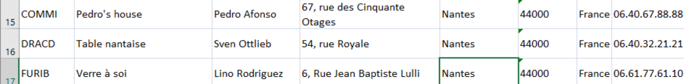

Mission 1
Contexte :
Lors de la première mission nous avons tout d’abord commencer par manipuler une base de données sur excel
qui comprenait les tables Fournisseur, Produit, Catégorie, Clientèle, Commande, DetailCommande.
Ils nous a par la suite demandé de rechercher différentes données tel que le nombre de clients nantais.

Bilan structuré sur l’étude des données (illustré par des exemples) :
La recherche de données se trouvant sur une même page est assez simple mais bien qu'étant un très bon tableur conçu pour y faire des calculs plutôt que de ranger de manière claire et triée des données en quantité conséquentes nous avons affaire à plusieurs données avec énormément d’enregistrements répartis sur plusieurs onglets, ce qui rend difficile la lecture et le rangement de ces données.
Perspective d’amélioration, conclusion :
Afin d'améliorer cela il vaudrait donc mieux privilégier l’utilisation d’une base de données comme Access, qui permet notamment de ranger et de trier des données en quantité conséquentes plus facilement et plus rapidement, et ce, sur plusieurs tables que l’on peut relier entre elles grâce aux clés primaires, qui permettent de garantir l’unicité de chaque enregistrements (pour éviter les doublons), et les clés étrangères qui permettent de relier des tables entre elles notamment.